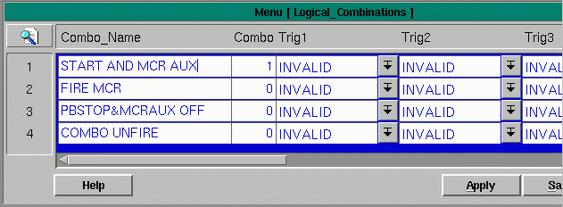

Combination Triggers allow you to evaluate multiple system conditions and execute a response based on the status of all the triggers. There are two types of combinations possible, "and" and "or".
For example, if you wanted to execute an action whenever a part was on and a timer was done you would write triggers with no response for the part I/O and timer done conditions. Next you would create a combination trigger for the parts. Finally, you would add a trigger that referenced the combo and executed the desired response.

The combination triggers table contains the following fields:
Combo Name - the name of the combination for reference by the Trigger table
Combo Type - either zero for an "and" combination or one for an "or" combination
Trig1 - brings up the trigger sets menu from which to select the first trigger in the combination
Trig2 - brings up the trigger sets menu from which to select the second trigger in the combination
Trig3 - brings up the trigger sets menu from which to select the third trigger in the combination
Trig4 - brings up the trigger sets menu from which to select the fourth trigger in the combination
Trig5 - brings up the trigger sets menu from which to select the fifth trigger in the combination
Trig6 - brings up the trigger sets menu from which to select the sixth trigger in the combination
Trig7 - brings up the trigger sets menu from which to select the seventh trigger in the combination
Trig8 - brings up the trigger sets menu from which to select the eighth trigger in the combination
Trig 9 - brings up the trigger sets menu from which to select the ninth trigger in the combination
Trig10 - brings up the trigger sets menu from which to select the tenth trigger in the combination
State - displays a '1' if the trigger is in the true (on) state and a '0' if in the false (off) state
Copyright © 2001 Fortna Inc. All rights reserved.